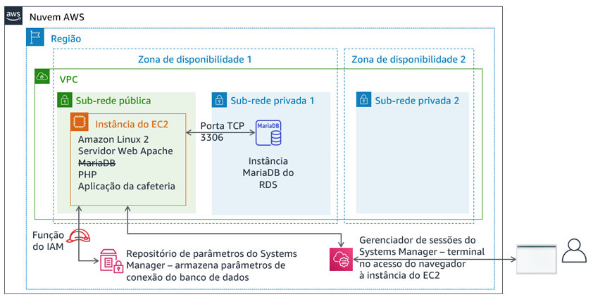

Módulo 5 – Laboratório de desafio: Migrar um banco de dados para o Amazon RDS
Cenário
Atualmente, a cafeteria usa uma única instância do EC2 para hospedar seu servidor Web, banco de dados e código de aplicação.
Enquanto isso, os negócios da cafeteria cresceram. O histórico de pedidos armazenado no banco de dados apresenta informações comerciais valiosas que a equipe não quer perder. Martha usa esses dados para contabilidade e Frank os analisa ocasionalmente para planejar quantas sobremesas de cada tipo ele deve preparar.
Sofía tem outras preocupações. O banco de dados precisa ser atualizado e corrigido de forma consistente, mas ela nem sempre tem tempo para fazer essas tarefas. Além disso, administrar o banco de dados é uma habilidade especializada e ela não quer gastar tempo treinando outras pessoas para isso. Porém, Sofía também está preocupada porque talvez a cafeteria não esteja fazendo backups de dados na frequência necessária.
Finalmente, Martha também quer reduzir os custos de mão-de-obra associados ao investimento em treinamentos técnicos para ensinar a gerenciar o banco de dados.
Visão geral e objetivos do laboratório
Neste laboratório, você migrará dados de um banco de dados em uma instância do Amazon Elastic Compute Cloud (Amazon EC2) para o Amazon Relational Database Service (Amazon RDS). Mais especificamente, você migrará um banco de dados MariaDB executado em uma instância do EC2 para um banco de dados MariaDB executado no Amazon RDS. Você também atualizará a aplicação Web da cafeteria para usar o novo banco de dados para armazenar dados sobre todos os pedidos futuros.
Depois de concluir este laboratório, você deverá ser capaz de:
- Criar uma instância do banco de dados do RDS
- Exportar dados do banco de dados MariaDB usando mysqldump
- Conectar um cliente SQL a um banco de dados do RDS
- Migrar dados de um banco de dados MariaDB executado em uma instância do EC2 para uma instância de banco de dados do RDS
- Configurar uma aplicação Web para usar a nova instância do banco de dados do RDS para armazenamento
Quando você inicia o laboratório, os seguintes recursos já estarão na conta da AWS:
No final deste laboratório, sua arquitetura será semelhante ao seguinte exemplo:

Duração
Este laboratório levará aproximadamente 80 minutos para ser concluído.
Restrições de serviço da AWS
Neste ambiente de laboratório, o acesso aos serviços e ações de serviço da AWS pode estar restrito àqueles necessários para concluir as instruções do laboratório. Você poderá encontrar erros se tentar acessar outros serviços ou executar ações além do que está descrito neste laboratório.
Acessar o Console de Gerenciamento da AWS
Na parte superior destas instruções, escolha Start Lab (Iniciar laboratório) para iniciar o laboratório.
Um painel Start Lab (Iniciar laboratório) é aberto com o status do laboratório.
Dica: se você precisar de mais tempo para concluir o laboratório, escolha novamente o botão Start Lab (Iniciar laboratório) para reiniciar o cronômetro do ambiente.
Aguarde até que o painel Start Lab (Iniciar laboratório) exiba a mensagem Lab status: ready (Status do laboratório: pronto) e, em seguida, escolha X para fechar o painel.
Na parte superior destas instruções, escolha AWS.
Essa ação abrirá o Console de Gerenciamento da AWS em uma nova guia do navegador. O sistema fará seu login automaticamente.
Dica: se uma nova guia do navegador não for aberta, normalmente você verá uma faixa ou um ícone na parte superior do navegador com uma mensagem informando que o navegador está impedindo que o site abra janelas pop-up. Escolha a faixa ou o ícone e depois Allow pop ups (Permitir pop-ups).
Organize a guia do Console de Gerenciamento da AWS para que ela seja exibida com essas instruções. O ideal é ver as duas guias do navegador abertas ao mesmo tempo, para facilitar o acompanhamento das etapas do laboratório.
Não altere a região, a menos que seja especificamente instruído a fazer isso.
Dica: para ocultar o terminal, desmarque a caixa de seleção Terminal na parte superior da tela.
Uma solicitação de negócios: Criar uma instância do RDS para a aplicação da cafeteria (Desafio nº 1)
Depois de uma conversa com Olivia (a arquiteta de soluções da AWS que frequenta a cafeteria), Sofía decidiu que a cafeteria precisa de uma solução de banco de dados mais fácil de manter. Além disso, o banco de dados deve fornecer recursos essenciais, como durabilidade, escalabilidade e alta performance.

Na primeira parte deste laboratório, você assumirá o papel de Sofía. Você criará uma instância do RDS que possa ser usada como camada de armazenamento de dados para o site da cafeteria. Você também se conectará à instância do EC2 e analisará os detalhes da aplicação Web da cafeteria.
Tarefa 1: criar uma instância do RDS
Seu primeiro desafio neste laboratório é criar uma instância do RDS.
Crie uma instância do RDS que esteja em conformidade com estas especificações. (Quando você enviar seu trabalho no final do laboratório, muitas dessas configurações serão verificadas. Para receber a nota máxima, siga estas diretrizes.)
Tipo de mecanismo: MariaDB
Modelos: Dev/Test
Identificador de instância de banco de dados:
CafeDatabaseUsername (Nome de usuário):
adminSenha:
Caf3DbPassw0rd!- Você precisa usar essa senha exata.
- Dica: copie e cole a senha para defini-la.
Classe da instância de banco de dados: db.t2.micro
Tipo de armazenamento: uso geral (SSD)
Armazenamento alocado:
20GiBNão crie uma instância em espera
Coloque-a no Lab VPC
Grupo de sub-redes:
lab-db-subnet-group, onde o banco de dados não é publicamente acessível.Escolha o grupo de segurança da VPC existente chamado
dbSGe desmarque o grupo de segurançadefault (padrão).Zona de disponibilidade: selecione a primeira zona de disponibilidade na lista, que termina com
a. Por exemplo, se a região for us-east-1, escolha us-east-1a.Porta do banco de dados: mantenha a porta TCP padrão de 3306.
O monitoramento aprimorado não é compatível com o ambiente do laboratório. Limpe a configuração padrão.

Importante: não espere o banco de dados terminar o processo de criação. Em vez disso, depois de iniciar com êxito o processo de criação do banco de dados, continue para a próxima etapa.
Tarefa 2: analisar a implantação da aplicação existente da cafeteria
Nesta tarefa, você se conectará à instância do EC2 existente que executa a aplicação atual da cafeteria.
Navegue até o Console do EC2 e escolha Running instances (Instâncias em execução).
Observe a instância em execução chamada CafeServer. Essa instância do EC2 foi criada quando você iniciou o laboratório.
Teste a aplicação da cafeteria.
Abra uma nova guia do navegador e carregue a aplicação da cafeteria em
http://<public-ip-address>/cafe.Observação: substitua <public-ip-address> pelo endereço IP público do IPv4 real da instância CafeServer.
Navegue até a página Menu e tente fazer um pedido.
Para isso, altere a quantidade de pelo menos um item do menu para pelo menos 1 e escolha Submit Order (Enviar pedido).
Uma página de Confirmação de pedido deve ser exibida, o que indica que o site da cafeteria está funcionando conforme esperado.
Escolha Order History (Histórico de pedidos).
A página mostra que foram feitos muitos pedidos. O banco de dados atual contém pedidos de clientes anteriores que você migrará para um banco de dados hospedado no Amazon RDS.
Conecte-se à instância do EC2 usando o AWS Systems Manager para acessar uma sessão de terminal no navegador.
De volta ao Console de Gerenciamento da AWS, navegue até o console do Systems Manager e escolha Session Manager.
Inicie uma sessão e conecte-se ao CafeServer.
Agora você deve ter uma nova guia do navegador aberta, com uma sessão de terminal conectada à instância do EC2.
No prompt, insira o seguinte comando.
bashsudo susu ec2-userwhoamicd /home/ec2-user/Análise: o primeiro comando resultou em um shell Bash. O segundo comando trocou a sessão para usar a conta de usuário raiz na instância do EC2. O terceiro comando trocou a conta para ec2-user. O quarto comando deve ter retornado saída que confirma que você está conectado como o ec2-user. O último comando muda seu terminal para o diretório inicial do ec2-user.

Observação: o agente do Systems Manager (agente ssm) é instalado por padrão em todas as instâncias do Amazon Linux 2 (e alguns outros tipos de sistemas operacionais). Quando você iniciou o laboratório e a instância do EC2 foi criada, os dados do usuário especificaram que o serviço do agente ssm deve ser iniciado na instância. Além disso, uma função do AWS Identity and Access Management (IAM) que inclui uma política do IAM chamada AmazonSSMManagedInstanceCore foi anexada à instância do EC2. Essas duas ações permitiram que a instância fosse acessada pelo gerenciador de sessões do Systems Manager.
Novo requisito da empresa: exportar dados do banco de dados antigo e estabelecer uma conexão com o novo banco de dados (Desafio nº 2)
Agora que você criou uma nova instância do RDS, pode passar para a próxima etapa do plano de migração do banco de dados da cafeteria. A seguir, você exportará os dados do banco de dados que a aplicação da cafeteria usa atualmente. Você também estabelecerá uma conexão de rede da instância do EC2 (onde a aplicação é executada) para a nova instância de banco de dados do RDS.
Neste desafio, você completa essas tarefas como Sofía.
Tarefa 3: trabalhar com o banco de dados na instância do EC2
Nesta tarefa, você observará detalhes sobre o banco de dados MariaDB executado na instância do EC2. Em seguida, você exportará dados do histórico de pedidos existente no banco de dados usando o utilitário mysqldump.
Observe os detalhes do banco de dados executado na instância do EC2.
No terminal, execute estes comandos:
service mariadb statusmysql --versionA saída deve mostrar que o banco de dados MariaDB instalado localmente nesta instância do EC2 está em execução. Ela também deve mostrar o número da versão do banco de dados.
Deixe esta guia do navegador aberta. Você vai usá-la durante todo o laboratório.
- Retorne à guia do navegador com o console do AWS Systems Manager aberto.
No painel à esquerda, em Application Management (Gerenciamento de aplicações), escolha Parameter Store (Repositório de parâmetros).
Observe que sete parâmetros são armazenados aqui. O código PHP da aplicação da cafeteria faz referência a esses valores, por exemplo, para recuperar as informações de conexão do banco de dados.
- Escolha o parâmetro
/cafe/dbPassworde copie o valor para a área de transferência. Ele será usado em breve.
- Escolha o parâmetro
Conecte-se ao banco de dados em execução na instância do EC2.
Na guia do navegador com o terminal Bash, conecte o cliente MySQL baseado no terminal ao banco de dados. Para isso, execute este comando:
mysql -u root -pQuando a senha do banco de dados for solicitada, cole o valor do parâmetro dbPassword que você copiou.
Agora você deve ver um prompt
mariadb>. Ele indica que você está conectado ao banco de dados MariaDB executado nesta instância do EC2.

Observe os dados no banco de dados existente.
Para observar o conteúdo do banco de dados, insira os comandos a seguir. Em particular, você analisará as tabelas de suporte da aplicação Web da cafeteria.
show databases;use cafe_db;show tables;select * from `order`;Esses comandos mostram todos os pedidos feitos, incluindo o pedido que você fez um pouco antes.
select * from `order_item`;Este comando mostra os itens da linha do pedido. Cada número de pedido tem uma linha para cada tipo de item solicitado, com detalhes sobre a quantidade de cada item e o preço.
Todos esses dados devem ser migrados para o novo banco de dados.
Saia do cliente SQL.
exit;
Use o utilitário mysqldump para capture os dados existentes em um arquivo.
mysqldump --databases cafe_db -u root -p > CafeDbDump.sqlQuando a senha do banco de dados for solicitada, cole o valor dbPassword do repositório de parâmetros do Systems Manager.
Confirme se o utilitário mysqldump foi bem-sucedido.
Execute o comando
lsno terminal. A saída deve mostrar que o arquivoCafeDbDump.sqlfoi criado.Execute o comando
cat CafeDbDump.sqlpara ver o conteúdo do arquivo.Na próxima seção do laboratório, você importará esses dados para o novo banco de dados do RDS.
Tarefa 4: trabalhar com o banco de dados do RDS
Nesta tarefa, você responderá primeiro a algumas perguntas sobre a instância do RDS que você criou. Em seguida, confirmará que pode se conectar à instância do RDS.
- No Console de Gerenciamento da AWS, retorne ao console de serviço do RDS e confirme se a instância cafedatabase do RDS criada está disponível.
Responder às perguntas sobre a instância do RDS
As respostas serão gravadas quando você clicar no botão azul Submit (Enviar) no fim do laboratório.
Acesse as perguntas deste laboratório.
- Acima destas instruções, escolha Details > Show (Detalhes > Mostrar).
- Escolha o link Access the multiple choice questions (Acessar as perguntas de múltipla escolha).
Na página que você carregou, responda às primeiras quatro perguntas:
- Pergunta 1: Onde a instância do RDS está sendo executada?
- Pergunta 2: A instância do RDS tem um endereço IP público IPv4 atribuído a ela?
- Pergunta 3: Qual é a tag Nome aplicada à sub-rede em que a instância do RDS está sendo executada?
- Pergunta 4: Quantas regras de grupo de segurança estão definidas para a instância do RDS?
- Estabeleça uma conexão de rede entre o terminal em execução na instância do EC2 e a nova instância do RDS.
Veja algumas dicas que ajudarão você a começar:
Dica nº 1 (clique para expandir)
Aqui está a sintaxe que você pode usar para se conectar: mysql -u admin -p --host <rds-endpoint>
Substitua <rds-endpoint> pelo endpoint real do RDS para sua instância do RDS.
Depois de executar o comando, será solicitado que você digite a senha para a instância do RDS. Você definiu essa senha quando criou a instância do RDS.
Dica nº 2 (clique para expandir)
Mesmo que você digite o endpoint do RDS e a senha do banco de dados corretamente, ainda não poderá se conectar. Você precisa atualizar as regras de entrada do grupo de segurança em que a instância do RDS é executada. O software cliente do MySQL tenta se conectar ao banco de dados na porta TCP 3306.Dica nº 3 (clique para expandir)
Evite abrir a porta 3306 para todos os endereços IP de origem. Isso não seria seguro. Em vez disso, abra-a apenas para servidores do grupo de segurança usado pela instância do EC2 de que você está se conectando (tente digitarsg- no campo de origem para ver as opções).
Dica nº 4 (clique para expandir)
Você pode confirmar que as configurações do grupo de segurança permitem o tráfego na porta TCP 3306 da instância do EC2 para o banco de dados. Tente executar estes comandos no terminal do gerenciador de sessão do Systems Manager (substituanmap -Pn <rds-endpoint>Para confirmar se as configurações do grupo de segurança permitem o tráfego, verifique se a saída do comando mostra que a porta 3306 está aberta para o serviço *mysql*.
Se nmap mostrar que a porta está aberta, então o comando
mysql -u admin -p --host <rds-endpoint> também deve funcionar. (No entanto, você precisa digitar a senha do banco de dados corretamente. Essa senha é aquela que você definiu quando criou a instância).
Observação: se você ainda não conseguir resolver o problema, talvez seja útil executar o script de avaliação conforme documentado na seção Enviar o trabalho no final destas instruções do laboratório. O relatório de envio gerado pode fornecer mais dicas sobre partes do laboratório que você não concluiu com êxito. Você pode enviar o trabalho quantas vezes quiser e somente a pontuação do último envio será mantida.
É importante confirmar que você pode se conectar ao bando de dados MariaDB do RDS antes de ir para a próxima etapa. Se você já conseguiu se conectar, parabéns!
Execute o comando
show database;. O resultado deve ser este:
- Observe que o banco de dados cafe_db ainda não está na lista. Isso é esperado, porque você não importou nenhum dado.
- Para desconectar, execute o comando
exit;.
Novo requisito da empresa: importar dados e conectar a aplicação ao novo banco de dados (Desafio nº 3)
No desafio anterior, você exportou os dados do banco de dados que a aplicação da cafeteria usa atualmente. Você também estabeleceu uma conexão de rede entre a instância do EC2 e a instância do RDS. Agora, você pode trabalhar no próximo requisito da empresa.
Neste desafio, você continuará no papel de Sofía e importará os dados da cafeteria para a instância do banco de dados do RDS. Depois de concluir a importação, você configurará a aplicação para usar o novo banco de dados.
Tarefa 5: importar os dados para a instância de banco de dados do RDS
Importe os dados exportados na tarefa 3 para a instância do banco de dados do RDS.
Para importar os dados, execute o seguinte comando no terminal (onde
<rds-endpoint>é o endpoint real):mysql -u admin -p --host <rds-endpoint> < CafeDbDump.sqlNo prompt de senha, insira a senha da instância do RDS.
Caso não haja nenhum erro, o comando provavelmente foi bem-sucedido.
Confirme se os dados foram importados.
Para se conectar ao banco de dados do RDS, execute este comando:
mysql -u admin -p --host <rds-endpoint>No prompt de senha, insira a senha da instância do RDS.
Para confirmar se os dados foram importados, execute o seguinte comando:
show databases;use cafe_db;show tables;select * from `order`;
A saída da instrução select deve mostrar pelo menos 24 pedidos no banco de dados.
Saia do cliente SQL:
exit;
Tarefa 6: conectar a aplicação da cafeteria ao novo banco de dados
Nesta última tarefa do laboratório, você será desafiado a conectar a aplicação da cafeteria ao novo banco de dados. Você também interromperá o banco de dados que é executado localmente na instância do EC2.
- Retorne à guia do navegador AWS Systems Manager no console.
No painel à esquerda, escolha Parameter Store (Repositório de parâmetros).
Em um laboratório de desafio anterior você aprendeu que o código PHP da aplicação da cafeteria faz referência a esses valores. Por exemplo, ela usa os valores para recuperar as informações de conexão do banco de dados.
Conecte a aplicação da cafeteria à instância do RDS.
Como as informações de conexão de banco de dados foram alteradas, você deve atualizar esses valores para conectar a aplicação à nova instância de banco de dados do RDS em vez de ao banco de dados em execução na instância do EC2.
Dica nº 1 (clique para expandir)
Depois de atualizar o banco de dados a que a aplicação está conectada, usehttp://<public-ip>/cafe/menu.php para testar se você conseguiu atualizar a conexão.
Dica nº 2 (clique para expandir)
O código PHP não precisa de atualizações. Além disso, a configuração de rede não precisa de alterações adicionais, supondo que você tenha concluído com êxito o desafio anterior deste laboratório. As únicas atualizações que você deve fazer se referem a alguns valores do repositório de parâmetros do Systems Manager.Dica nº 3 (clique para expandir)
Os valores currency, dbName, timeZone e showServerInfo não precisam ser atualizados.Dica nº 4 (clique para expandir)
O dbUrl deve ser o valor do endpoint do RDS.Confirme se a aplicação Web está usando o novo banco de dados.
Interrompa o banco de dados que ainda está em execução na instância do EC2. No terminal, use este comando:
sudo service mariadb stopCarregue a página
http://<public-ip>/cafe/menu.phpe faça um pedido para confirmar se a aplicação ainda está funcionando.Escolha Order History (Histórico de pedidos). O pedido mais recente e todos os outros pedidos anteriores devem estar lá. Esses pedidos são os dados que você migrou para o novo banco de dados.
Novidades da cafeteria

Todos da cafeteria estão satisfeitos com os resultados da migração do banco de dados. Sofía e Nikhil agora têm mais tempo livre nos fins de semana, o que significa que Frank e Martha estão economizando dinheiro com custos trabalhistas.
Sofía relaxa com seus amigos por alguns minutos. No entanto, ela já está pensando em melhorias. Uma boa próxima etapa seria reduzir o tamanho do volume do EBS usado pela instância do EC2. Também é possível economizar alterando o tipo de instância do EC2 para um tamanho menor. Como o banco de dados não é mais executado na instância do EC2, a instância agora tem espaço extra no disco rígido e talvez não precise de tantos recursos de CPU e memória.
Enviar o trabalho
Na parte superior destas instruções, escolha Submit (Enviar) para gravar o progresso e, quando solicitado, escolha Yes (Sim).
Se os resultados não forem exibidos após alguns minutos, volte ao topo destas instruções e escolha Grades (Notas).
Dica: você pode enviar seu trabalho várias vezes. Depois de alterar o trabalho, escolha Submit (Enviar) novamente. Seu último envio é o que será gravado para este laboratório.
Para ver o feedback detalhado do seu trabalho, escolha Details (Detalhes) e depois View Submission Report (Visualizar relatório de envio).
Laboratório concluído
Parabéns! Você concluiu o laboratório.
Para confirmar que você deseja encerrar o laboratório, escolha End Lab (Encerrar laboratório), na parte superior desta página e escolha Yes (Sim).
Será exibido um painel com a mensagem: DELETE has been initiated... You may close this message box now. (A EXCLUSÃO foi iniciada... Você pode fechar esta caixa de mensagem agora).
- Escolha o X no canto superior direito para fechar o painel.
©2020, Amazon Web Services, Inc. e suas afiliadas. Todos os direitos reservados. Este trabalho não pode ser reproduzido ou redistribuído, no todo ou em parte, sem permissão prévia por escrito da Amazon Web Services, Inc. É proibido copiar, emprestar ou vender para fins comerciais.